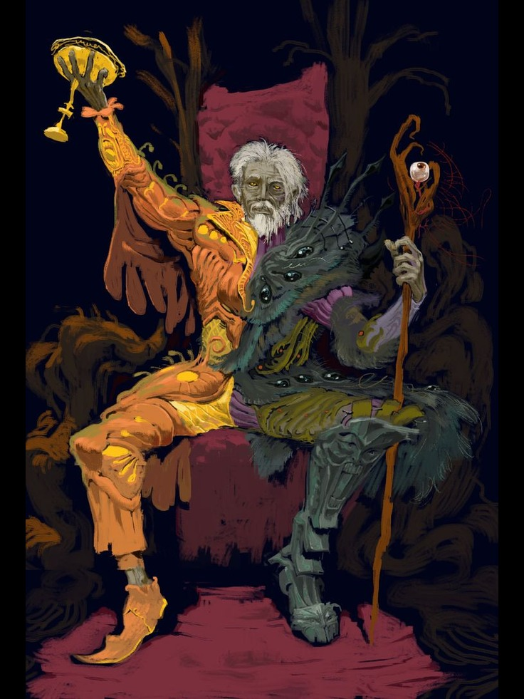

Deliliğin 16 Andı
Düzen, mantık, bilinç... Her şey bilinir olduğunda hayat çok sıkıcı değil mi? İster inan ister inanma, ama ölümsüz tanrılar bile böyle düşünüyor. Hatta öyle hoşnutsuzlar ki bu durumdan, Mantığın Tanrısını lanetlediler vaktinde. Şimdi kendileri bir kişilik karmaşası içerisindeler.
Kendileri derken bunu kibarlık olarak almayın, çünkü Sheogorath ciddi ciddi çift kişilikli. Ya da daha doğrultusu aynı anda iki kişi, ya da farklı zamanlarda tek kişi. Açıklaması zor, çılgın bir durum. Ama zaten yolumuz çılgınlık değil mi?
Deli Tanrı Sheogorath bizi peynirler içinde kaybolmaya çağırıyor. Bakalım şart koştuğu yeminler nelermiş.
Metnin orijinaline buradan ulaşabilirsiniz.
Deliliğin 16 Andı
Kitap 9: Vaermina Söyleni
Darius Shano kendini canı pahasına koşarken buldu.
Ne için, nereye veya neyden kaçtığına dair hiçbir fikri yoktu ama zaten umrunda da değildi. Zihni tek ton bir frekansla çınlıyordu, varolan tek şey kaçıştı. Gözleri konumunu kavramasına yardımcı olacak herhangi bir şey için arandı; hedef alabileceği, yolunu gösterecek herhangi bir şey. Ama nafile, göz alabildiğince uzanan bu koskoca ovada sonsuza kadar uzanan otların tekrarı dışında hiçbir şey bulamadı. "Sadece koşmam lazım, koşmaya devam etmem lazım" diye düşündü, "canımı dişime takarak koşmam lazım". Ve de koştu, sonu yokmuşcasına, koşmak yaşammışcasına koştu.
Başucu